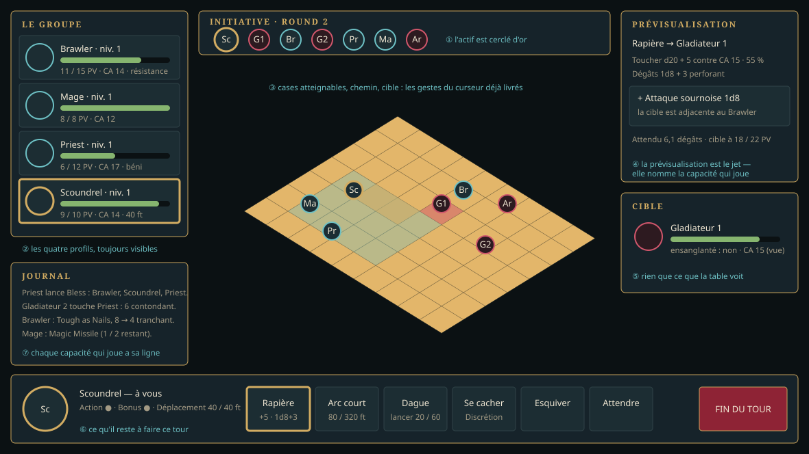

Trajectoire › référentiel 0.1.0
0.0.2 Système de combat
Les quatre classes de base, d'après leurs fiches préfabriquées, et le combat de groupe.
planifiée en détail
Avancement — 0 %
Ce que la version rend jouable
- Les quatre classes de base du Player's Guide, fidèles aux fiches préfabriquées (p. 195, 199, 203, 207) : compétences, capacités, assets.
- Le combat de groupe : plusieurs personnages joués contre plusieurs adversaires.
- Une interface à jour : les profils des personnages dans le combat, la fiche et le groupe.
Critères de sortie
- Chacune des quatre fiches préfabriquées se recrée dans le jeu, valeur pour valeur.
- Un combat à quatre contre quatre se joue de bout en bout dans l'Arena of Fate, au clavier comme à la manette.
- Chaque capacité de classe des fiches a un effet en combat et une ligne dans le journal.
Ce que les fiches préfabriquées imposent
Les quatre fiches du Player's Guide (p. 195, 199, 203, 207) sont de niveau 1 et ne listent ni capacités, ni sorts, ni équipement : tout cela se déduit des règles de la classe. Le relevé complet est dans le référentiel.
| Classe | Simplifie | Fiche | Ce qu'elle demande au moteur |
|---|---|---|---|
| Brawler | Barbarian | Half-Orc, PV 15, CA 14 | une CA sans armure ; la résistance à tous les dégâts |
| Mage | Wizard | Autumn Elf, PV 8, CA 12 | l'incantation simplifiée : deux lancers par jour et par sort |
| Priest | Cleric | Hill Dwarf, PV 12, CA 17 | les soins, bless et la concentration |
| Scoundrel | Rogue | Human, PV 10, CA 14 | l'attaque sournoise par adjacence d'un allié ; le déplacement sans attaque d'opportunité |
Deux de ces mécaniques n'ont de sens qu'en groupe — l'attaque sournoise et les soins : c'est pourquoi classes et combat de groupe sont dans la même version.
L'interface
{kind=link}

Le plafond
Niveaux 1 à 5. Les tables sont saisies jusqu'au niveau 20, mais seules les capacités des cinq premiers niveaux sont implémentées : c'est ce que l'Empire central demande. Le reste est à la 0.3.0.
Graphe des prérequis
Les lots, dans l'ordre calculé
| # | Lot | Objet | Filière | Taille | Prérequis | Débloque | État |
|---|---|---|---|---|---|---|---|
| 21 | LOT-130 | Les quatre fiches préfabriquées, en données | Règles et données | M | LOT-122 | 85 | en attente |
| 22 | LOT-131 | Le socle de classe simplifiée | Moteur | L | LOT-130 | 82 | en attente |
| 23 | LOT-132 | Classe — Brawler | Règles et données | M | LOT-131 | 77 | en attente |
| 24 | LOT-133 | Classe — Mage | Règles et données | M | LOT-131 | 77 | en attente |
| 25 | LOT-134 | Classe — Priest | Règles et données | M | LOT-131 | 77 | en attente |
| 26 | LOT-135 | Classe — Scoundrel | Règles et données | M | LOT-131 | 77 | en attente |
| 27 | LOT-138 | Le groupe de quatre | Moteur | M | LOT-130 | 77 | en attente |
| 28 | LOT-137 | États, agonie et mort | Moteur | M | LOT-131 | 76 | en attente |
| 29 | LOT-139 | Le combat de groupe | Moteur | L | LOT-137 LOT-138 LOT-132 LOT-133 LOT-134 LOT-135 | 75 | en attente |
| 30 | LOT-136 | Assets des quatre classes | Assets HD | L | LOT-130 | 73 | en attente |
| 31 | LOT-140 | L'interface de combat, à jour | Interface | M | LOT-139 | 73 | en attente |
| 32 | LOT-141 | La fiche et l'écran de groupe | Interface | M | LOT-138 LOT-132 LOT-133 LOT-134 LOT-135 | 73 | en attente |
| 33 | LOT-143 | Éditeur — des zones de combat pour un groupe | Éditeur de cartes | S | LOT-139 | 73 | en attente |
| 34 | LOT-142 | Recette et version 0.0.2 | Recette et version | M | LOT-140 LOT-141 LOT-136 LOT-143 | 72 | en attente |
Sources du corpus
- Player's Guide to Tanares — classes simplifiées, p. 192-208 ; fiches préfabriquées p. 195, 199, 203, 207